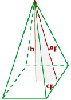

General Area Calculator
Pirámide
V = (Ab * h)⁄3 -> El volumen es igual a la tercera parte del producto del área de la base por la altura.
Una pirámide es un poliedro limitado por una base, que es un polígono con una cara; y por caras, que son triángulos coincidentes en un punto denominado ápice.
El ápice o cúspide también es llamado vértice de la pirámide, aunque una pirámide tiene más vértices, tantos como el número de polígonos que lo limitan.